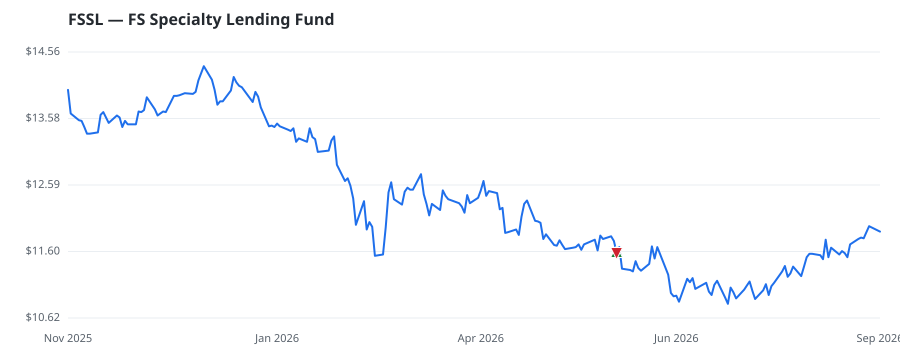

bullish · bearish · n/a — dots: price>SMA10 · SMA10>SMA50 · SMA50>SMA200 · up>down volume (20d)
Other · small cap
Members who bought FSSL earned a dollar-weighted +0.0% from their disclosure dates, versus +0.0% for the S&P 500 over the same holding windows (+0.0% alpha).

▲ green = a disclosed purchase · ▼ red = a disclosed sale (plotted on disclosure date)
FS Specialty Lending Fund is a United States-based externally managed, non-diversified, closed-end management investment company. The company's investment objectives are to generate current income and, to a lesser extent, long-term capital appreciation by investing mainly in private and public credit in a broad set of industries, sectors, and sub-sectors. Its investment policy is to invest mainly in a portfolio of secured and unsecured floating and fixed-rate loans, bonds, and other types of credit instruments, which, under normal circumstances, will represent at least eighty percent of the Co · website
| Member | Chamber | Out-performer | Disclosed buys $ | Return on buys |
|---|---|---|---|---|
| Tim Walberg | house | — | $8K | +0.0% |
Disclosed $ figures are bracket midpoints — filings report ranges (e.g. $1,001–$15,000), not exact amounts.